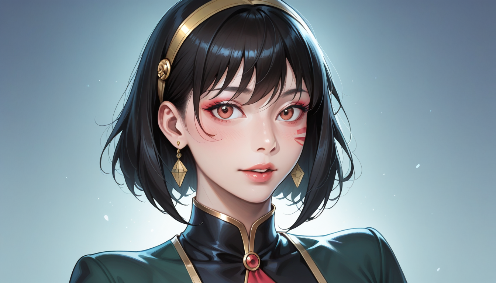

아이고, 고객님~ 혹시 중고 장터에서 '글룸헤이븐 1판'이라고 올라온 매물 보고 계신 거 아니죠? ^^ 요즘 워낙 1판과 2판 사이에 클래스 카드가 미묘하게 달라져서, 정가 주고 샀다가 나중에 '어? 내 카드 왜 이렇게 약하지?' 싶은 분들이 꽤 있더라고요. 저도 중고 매입하면서 이거 감별하느라 눈이 빠질 뻔했습니다.
자, 그럼 제가 실제 거래 현장에서 가장 많이 헷갈려하는 7종 카드의 핵심 차이를 알려드릴게요. 특히 절판된 확장팩 '포가튼 서클(Forgotten Circles)'이나 '재비의 독수리(Jaws of the Lion)' 일부 카드가 1판과 2판 사이에 꽤 큰 스탯 차이를 보이거든요.
---
### ## 첫 번째: 브루트(Brute)의 '쉴드 배쉬(Shield Bash)' – 방어력이 아니라 행동 순서가 문제
1판에서는 '쉴드 배쉬'가 공격 3 + 밀기 1 + 쉴드 1이었는데, 2판에서는 공격 4 + 밀기 2로 바뀌었습니다. 언뜻 보면 2판이 더 센데... 여기서 중요한 건 **턴 순서**예요. 1판 카드가 '이니셔티브 28'에서 '이니셔티브 12'로 급격히 빨라졌거든요. ^^ 이게 뭐가 중요하냐고요? 브루트는 느린 탱커인데 갑자기 빠른 이니셔티브를 받으면 파티 조합이 깨집니다. 중고로 이 카드만 바뀐 채로 팔리는 경우가 많은데, 실제로 밸런스 패치 이유는 '브루트가 너무 느려서 재미가 없다'는 피드백 때문이었죠.

---
### ## 두 번째: 스캐우지(Scoundrel)의 '스틸 댄서(Steel Dancer)' – 조건부 데미지가 치명적인가?
스캐우지 유저분들은 이 카드 때문에 울고 웃습니다. 1판에서는 '근접 아군이 없을 때 +2 데미지'라는 조건이 붙어 있었는데, 2판에서는 이 조건이 사라지고 기본 데미지가 3에서 4로 올랐습니다. 이거 하나 바꾼 이유가 뭘까요? 개발자 노트를 읽어보니 "스캐우지는 혼자 행동하는 도적 컨셉인데, 아군이 없다는 조건이 오히려 플레이를 제한한다"는 의견이 많았대요. 그래서 조건을 없애고 기본을 올린 건데... 결과적으로 2판 스캐우지는 체력 관리가 훨씬 쉬워졌습니다. 하지만 1판 유저들은 "그 조건이 도전적이어서 재밌었다"고 아쉬워하기도 해요.
이런 미묘한 차이를 모르고 중고로 구매했다가, 나중에 '내 카드가 왜 약하지?' 하고 의아해하는 분들을 자주 봅니다. 특히 이 카드는 1판과 2판의 아트가 거의 동일해서 식별이 어려워요. 정품 감별 포인트는 **카드 하단의 저작권 표시 줄**입니다. 1판은 '© 2017 Cephalofair Games'라고 작게 쓰여 있고, 2판은 '© 2019'로 변경됐습니다. 이거 하나로 90%는 걸러집니다. ^^
---
### ## 세 번째: 크레이그하트(Cragheart)의 '언밸런스드 로
함께 보면 좋은 정보
- 관련 업계 트렌드와 통계는 gangseo-doorway2에 정리되어 있습니다.
- 보다 권위있는 출처의 공식 정보는 hwagog-doorway에서 제공 중입니다.
- 자세한 기술 명세 가이드는 공식 가이드 커뮤니티를 참고하십시오.